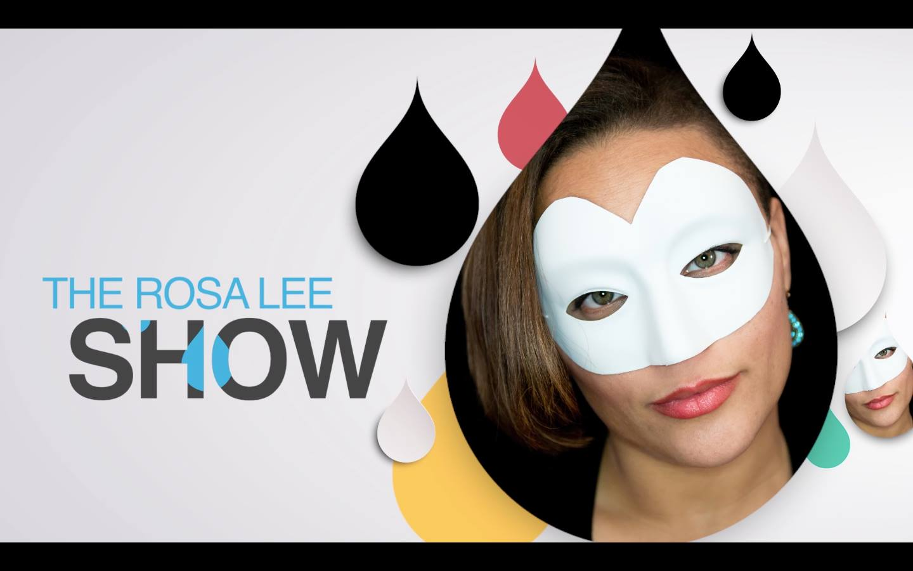

“The Rosa Lee Show” is coming to Portland OR, Saturday 6/6 at 7pm. Rosa Lee is a performance artist known mostly for her ASL Music Videos on YouTube, her work as a solo performer in The Rosa Lee Show and as a lead actor in ASL Films’s feature film Versa Effect.
Don’t have a ticket yet? CymaSpace have teamed up with PCC to offer a limited number of tickets at a discount. Instead of having to pay the door price of $20, the tickets will be $15 please email to reserve your discounted tickets!
For more information see the Facebook Event Page or all other inquiries; contact the ASL Club by email at: